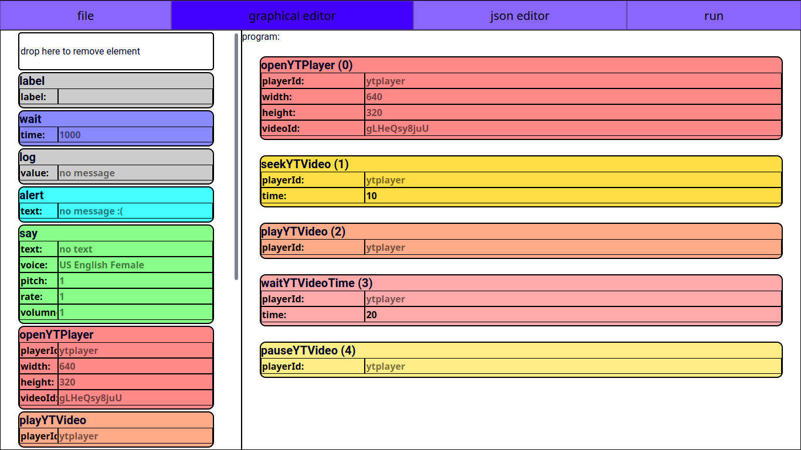
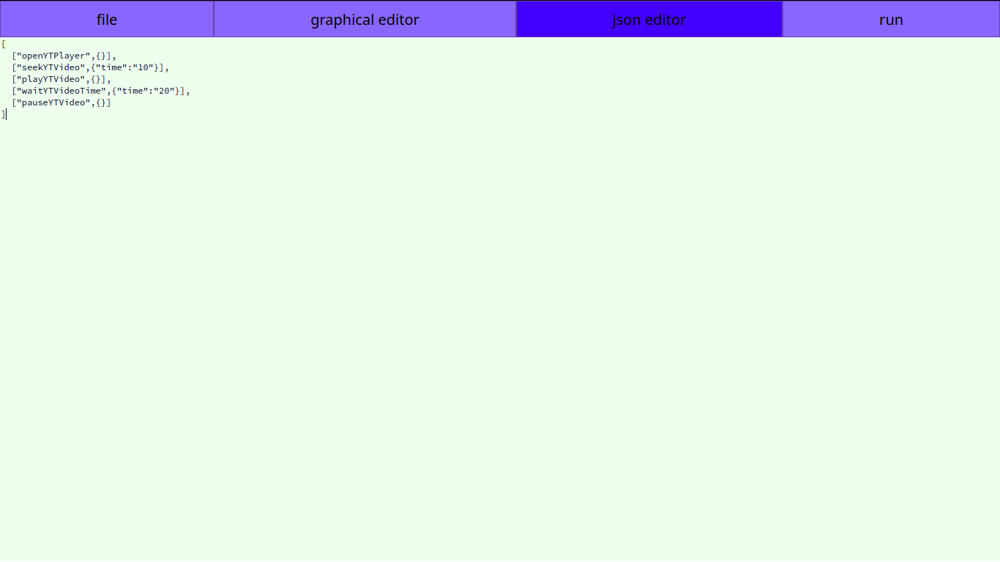
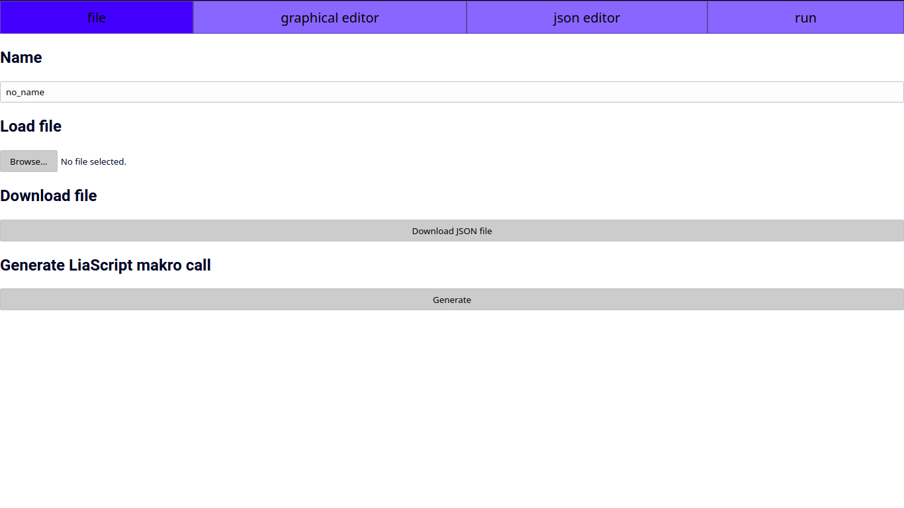

Edu Video Script
Drag and drop code line boxes or edit json code data in online editor.
Example Files
Demo TU Freiberg Video und süße Katzen (kaputt, weil Video gelöscht): Download LiaScript
LiaScript
See Example
Screenshots
You can move code blocks with drag and drop.
In the following program, the one video is played from second 10 to second 20.

You can change code blocks in the json editor.
["commandType",{"parametername1":"value1","parametername2":"value2", ... }]

It is possible to save and load the program in json files.
It is also possible to generate the LiaScript macro call.
